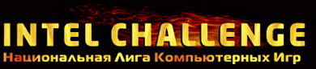
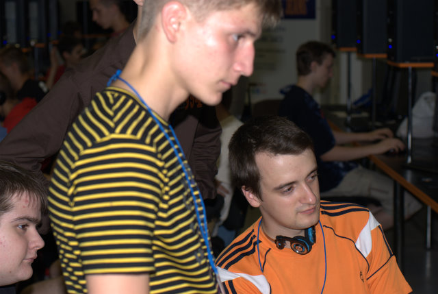
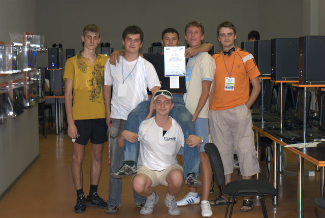
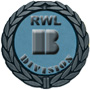
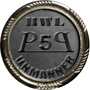

Это реконструированный сайт topw3.narod.ru | Харьков 2005-2007
Вести с полей (или будни war3 by clan ToP :D)
Лето, традиционно, является наиболее богатой на киберспортивные события порой года. И за прошедший промежуток времени clan ToP так же не бездействовал, а принимал участие в целом ряде ивентов различной значимости. Результаты этих событий вы можете посмотреть у нас на сайте в разделе «отчеты», а мы вкратце познакомим вас с общим ходом проведения данных мероприятий…
НЛКИ: финал профессиональной серии
Первый сезон невероятно раскрученной украинской лиги получился прямо скажем скомканным. И дело тут даже не в том, что на Харьковские отборочные пришло 3 (!!!) человека, в результате чего Ганнибал, давно завершивший карьеру игрока поехал на финал, а это между прочим стадия топ-16 страны (!!!). Сам финал так же получился довольно курьезным. Из 16 игроков до места проведения добралось только 9, причем среди 7 «недоехавших» оказался и наш Ехе, добавленный в список участников буквально в последний момент. Что касается Харьковской делегации (Gannibal+ Roppy) то она, что весьма логично не показала никаких результатов (игры с Муриком в группе, а Ганнибал даже не играл) зато получила футболки «про серии лиги НЛКИ» и… Путевку в следующий сезон про серии. Смех и грех… Впрочем Ганнибал обещал подтренироваться, чтобы остаться в «про» и на третий сезон. Если это случится, то это будет весьма занимательно. А пока наш игрок занимает третье место в группе, получает футболку и едет в Харьков готовиться к следующему финалу, который предположительно пройдет в октябре… P.S. Демки с финала про серии (в том числе и игры Ганнибала против SK.Hot-а (!!!)), а так же более полный обзор чемпионата вы сможете найти на сайте cyberarena.tv

WCG2007: Днепропетровские отборочные
Вслед за столь успешными для нас Донецкими отборами стартовали и отборочные в г. Днепропетровске, в которых принимали участие два новых игрока ТоР- BUCH и Noobkiller. Шансы двух эльфов оценивались достаточно невысоко, но желание показать сильную игру, после хорошего старта в Донецке, сыграло свою роль и игроки отыграли довольно мощно…
Нубкиллер начал достаточно мощно, сходу одержав две победы 2:0 над ранее не известными игроками- C7.62)CrKoma.X и gravitapok. В третьем туре виннерской сетки Нубикллер, в ожесточеннйо борьбе, увы, проигрывает орку- ПСИХ-у 1:2. Впоследствии Псих займет 3-е место…
Буч начал за упокой. Первая же игра, все с тем же Псих-ом, 0:2 и наш игрок уходит в лузера. В лузерах дела у Буча пошли по живее: три победы подряд, над r1A.Breezy, Angry и RvSon ни у кого не вызывали сомнений. В матче за проход в топ-8 судьба свела Буча с… Нубкиллером, которого первый, немного сенсационно побеждает (после игры был небольшой спор с лагами компов). К можалению это была последняя победа нашего игрока на турнире. На стадии топ-8 Буч проигрывает HR.DoomGuard -у, и занимает лишь 7-8 место. Хотелось бы отметить злую сетку, наши игроки явно заслуживали топ-6, но проиграв игрокам заявшим в итоге 3 и 4 места остались на топ-8 и топ-12 соответственно =/

ToP)Bush to NerqFrock: ты только посмотри, в кои то веки не эльфы топ-2...

Днепродзержинская тусовка празднует третье место Психа :D
RWL: отборочные в дивизион B
Квалификация казалось бы похоронила все амбиции клана ТоР относительно дивизиона Б. Ужасно случайное и нелепое поражение от слабенького клана BARS и казалось бы- всё… Но, команда cosmosTV распалась и в дивизионе Б образовался свободный слот, который и разыграли между собой 8 лучших команд из дивизиона С, по сетке DE.
В первом туре ТоР встречался со своими «обижчиками» на скоропостижно скончавшейся лиги WCL- кланом KREST. После продолжительных дебатов русский клан был раздавлен морально и пожалуй даже сдаться даже без игр. Поэтому никто не удивился, когда при счете 1:0 и 1:0 во втором матче клан КРЕСТ досрочно признал свое поражение…
Второй матч ТоР-а проходил против клана САТ- Белорусский клан настраивался дать настоящее сражение, но отсутствие двух сильнейших игроков превратило предполагаемо равный матч в избиение. 2:0, 2:0 и Сат, так же как ранее Крест, признает поражение…
В финале виннерской сетки наш клан встречался с кланом POST, который достаточно сенсационно прошел клан БАРС. И снова предполагаемо серьезный соперник доставил неприятности лишь своими бесконечными, истеричными жалобами после КВ. Кстати в итоге этого матча мы получили медаль за анманнер :D.
НУ а суперфинал не оставил никаких сомнений относительно лучшего клана див. С. Рематч против наших обидчиков- клана БАРС проходил при тотальном преимуществе нашей команды. Отдельно стоит отметить Тему и Буча, которые проигрывая по ходу дела 0:1 затем вырывали победу 2:1. Как итог уверенная победа ТоР-а 3:0 при том, что мы даже не задействовали нашу ударную силу в лице Ехе+ АТ пара…
Как итог ТоР проходит в столь долгожданный дивизион Б, с чем всех и поздравляю. Первые матчи основного сезона начнутся в сентябре, будем надеяться, что уверенная игра в этой квалификации продолжится и в основном сезоне…
P.S. Объединенный демопак с четырех кв этой квалификации есть у нас на сайте.
P.P.S. RWL награды клана ТоР по результатам квалификации:


Смена хостинга
Вопрос о переезде сайта на другой хостинг поднимался давно, но лишь недавно такой переезд стал возможным. Новый сайт пока что очень сырой, но все недоделки будут оперативно устраняться. Окончательный переезд предположительно назначен на первое сентября. Адрес сайта www.topw3.clan.su. В самое ближайшее время будет открыто голосование на тему актуальности подобного переезда.
На этом мы завершаем наш обзор последних и наиболее актуальных событий и с нетерпением ждем новых ивентов, первый среди которых WCG2007:Харьков. Оставайтесь с нами…